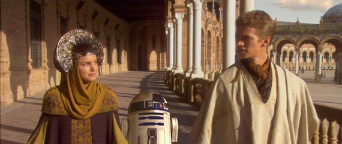
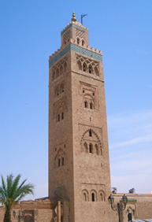
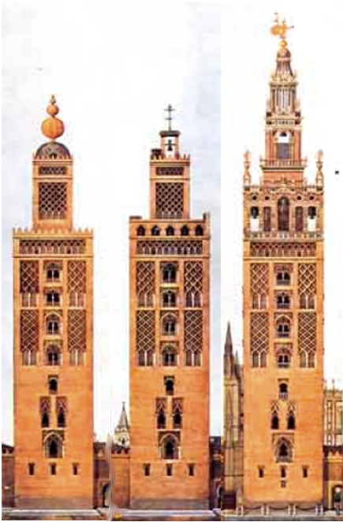

Mercredi à Seville
Planning de la journé
Découverte de la place d'Espagne
Visite de le Giralda
Pause déjeuner
Visite du quartier Barrio Santa Cruz
Visite de la casa de Pilatos
La Place d'Espagne
Emblème de Séville, cette place, composée par l'architecte Anibal Gonzales, est un lieu de promenade des familles.
Le pavillon d'Espagne (1929), vaste hémicycle de deux cents mètres de diamètre, au style inspiré de la Renaissance andalouse, au extrémités marquées par deux tours de quatre-vingts mètres
de haut. Les panneaux d'azulejos représentent des villes et des régions d'Espagne.
Plaza de España
La Giralda
Elle a pour soeurs jumelles et contemporaines deux tours marocaines: La Tour Hassan à Rabat et La Koutoubia à Marrakech.
La Koutoubia Marrakech
Tour Hassan Rabat